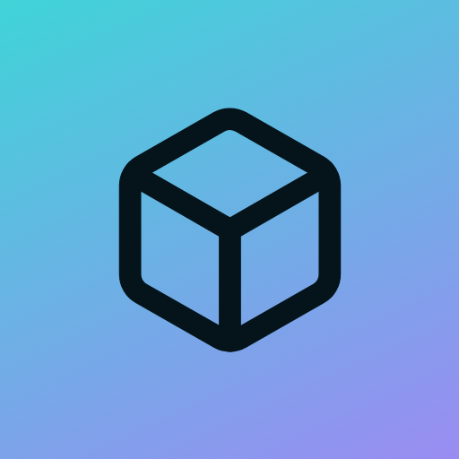

Dash RJE (teste)
Resumo Operacional · versão de teste no celular
Abrindo o painel…
iPhone · Safari
- Toque em Compartilhar (o quadrado com a seta para cima).
- Role e toque em Adicionar à Tela de Início.
- Toque em Adicionar. O ícone já vem com o nome certo.
Android · Chrome
- Toque nos três pontinhos ⋮ no canto de cima.
- Toque em Adicionar à tela inicial (ou Instalar app).
- Toque em Adicionar.